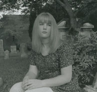

|
 "My work in photography goes beyond tradition as a whole. The photographs taken are real, but the way they are used in the final image portray events that are not solely created behind the lens of a camera. This is what intrigues me about photography: the compelling allusion of reality. This gives photographic images the quality of having been derived from the 'real' world. I feel most of my images are created by my subconscious and typically out-of-life experience. I do not consciously use symbols in my imagery, but looking at the images, one can visualize all kinds of symbolism. A great deal of my imagery reveals a mystic quality. Through my art, I want to challenge one's perception of reality." |